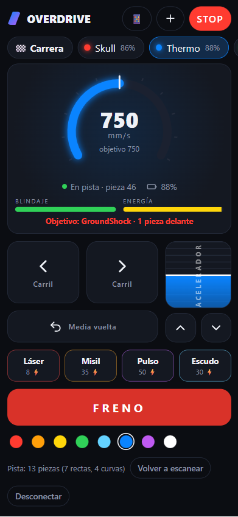
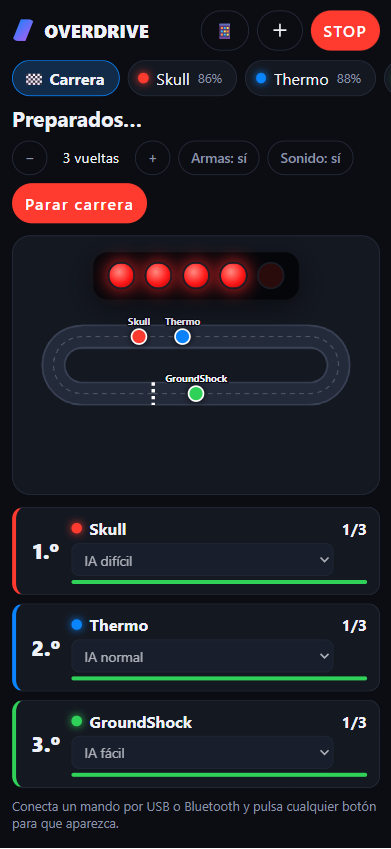
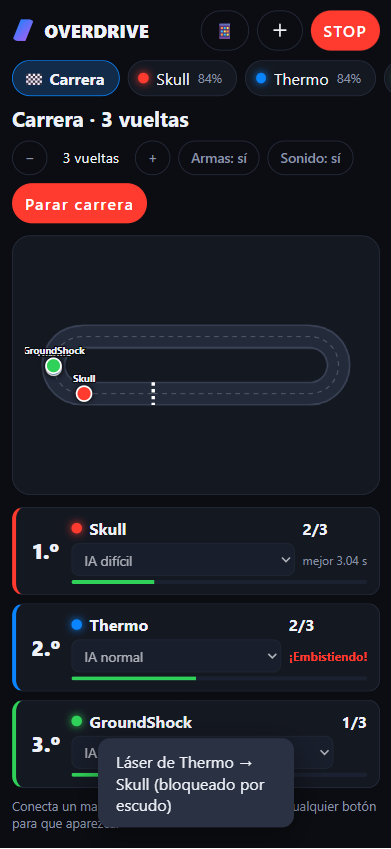
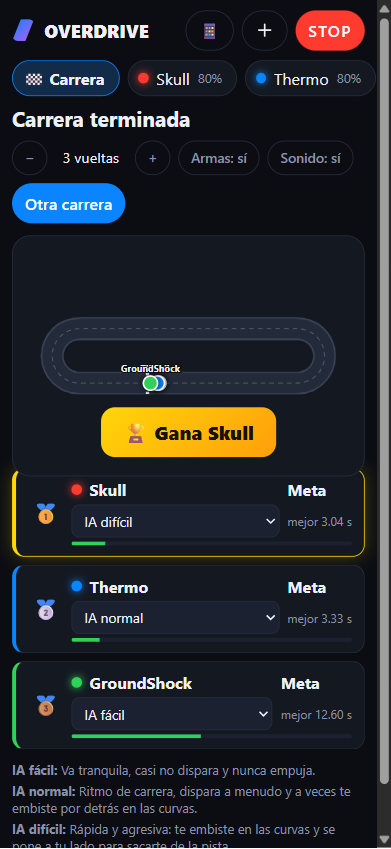
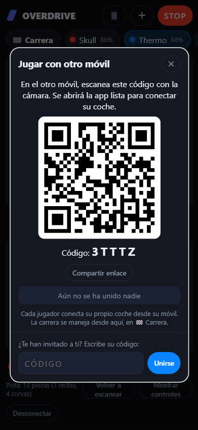
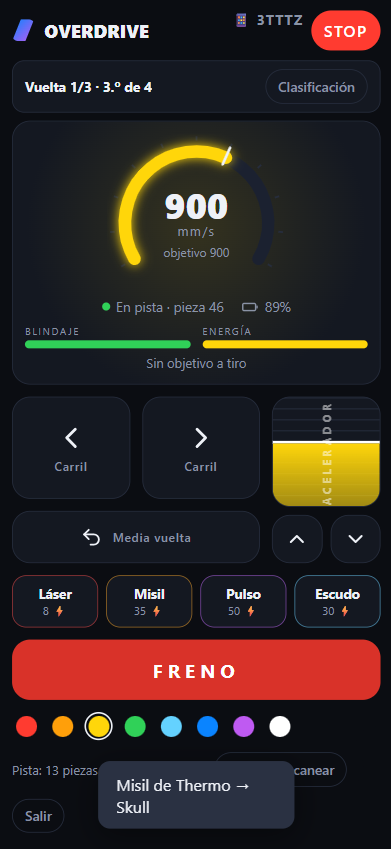
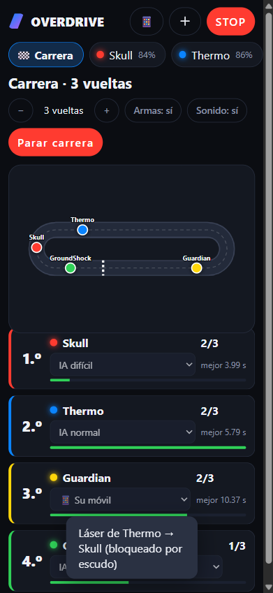

Coches Anki Overdrive cargados y la pista oficial montada. Los coches se guían leyendo códigos impresos en la pista: en el suelo sin pista no funcionan.
Un navegador con Web Bluetooth:
Android: Chrome o Edge (recomendado).
Windows, macOS, ChromeOS: Chrome o Edge.
iPhone / iPad: Safari no lo soporta; usa el navegador gratuito Bluefy.
Brave: lo trae desactivado; mira abajo cómo activarlo.
Opcional: uno o varios mandos (Xbox, PlayStation, 8BitDo…) por USB o Bluetooth.
Consejo: en el móvil, abre la app y usa Añadir a pantalla de inicio en el menú del navegador para tenerla como una app más, a pantalla completa.
Permisos de Bluetooth
Pantalla de inicio
Activa el Bluetooth del móvil u ordenador.
Enciende el coche y ponlo sobre la pista. Si no se despierta, déjalo un momento en el cargador.
Pulsa Conectar coche. El navegador abre una lista con los coches cercanos (aparecen como Drive o con su nombre).
Elige el coche y pulsa Vincular / Conectar. Repite con + (arriba) para añadir más coches.
La app solo pide acceso al coche que eliges en esa lista; no ve el resto de tus dispositivos.
Android
La primera vez Chrome pide permiso de Dispositivos cercanos: pulsa Permitir. Si lo rechazaste, ve a Ajustes → Aplicaciones → Chrome → Permisos → Dispositivos cercanos.
En Android 11 o anterior, Bluetooth necesita además la ubicación activada (es un requisito de Android para buscar dispositivos, la app no usa tu ubicación).
La web debe abrirse por https (el enlace de la app ya lo es).
iPhone / iPad
Instala Bluefy – Web BLE Browser desde la App Store y abre el enlace de la app con él.
Cuando iOS pregunte si Bluefy puede usar Bluetooth, pulsa Permitir (o actívalo en Ajustes → Bluefy → Bluetooth).
Windows y macOS
Usa Chrome o Edge con el Bluetooth del equipo activado.
En macOS, permite el Bluetooth al navegador en Ajustes del Sistema → Privacidad y seguridad → Bluetooth.
Brave
Brave desactiva Web Bluetooth por defecto. Escribe brave://flags en la barra de direcciones, busca Web Bluetooth, ponlo en Enabled y reinicia el navegador. Si no encuentras la opción, usa Chrome o Edge.
Revisar o quitar permisos
En Chrome: candado junto a la dirección → Configuración del sitio. Ahí puedes ver los dispositivos Bluetooth que has permitido y retirarlos.
Conducir

Cockpit de un coche
Acelerador (barra vertical): arrástralo; la velocidad se queda donde lo dejes, como un control de crucero. ▲ ▼ la cambian por pasos.
Carril ‹ ›: cambia de carril. Media vuelta le da la vuelta al coche. Ambos necesitan que el coche esté en marcha (si está parado, la app lo arranca suave).
FRENO para el coche; STOP (arriba) frena todos.
El velocímetro muestra la velocidad real que mide el coche y la objetivo. Debajo: batería, blindaje, energía y tu objetivo.
Los colores de abajo cambian la luz del coche. Cada coche tiene su pestaña arriba.
Escanear la pista
Para saber quién va delante, contar vueltas y dibujar el mapa, la app necesita conocer la pista. Pulsa Escanear pista (en el cockpit o en 🏁 Carrera): el coche da una vuelta despacio y frena en la línea de salida. Verás el mensaje Pista escaneada: 13 piezas….
Si no la escaneas, la app la aprende sola mientras conduces (en pistas sin pieza de salida tarda dos vueltas). Si cambias la pista, pulsa Volver a escanear.
Armas
Como en el juego original, las armas son virtuales: la app calcula el impacto y el coche alcanzado parpadea en rojo y frena. Con el blindaje a 0 queda fuera de combate 3 segundos. La energía se recarga sola. Cada arma tiene su sonido.
Arma
Energía
Alcance
Efecto
Láser
8
1 pieza por delante
−8 blindaje, frena un poco
Misil
35
3 piezas por delante
−30 blindaje, frena fuerte
Pulso
50
1 pieza, delante y detrás, a todos
−10 blindaje, casi los para
Escudo
30
—
Bloquea todo durante 3 s
Carrera e IA

Semáforo de salida

Mapa y clasificación en directo

Ganador y podio
Abre la pestaña 🏁 Carrera. Verás el mapa de la pista con los coches moviéndose en directo.
Elige el número de vueltas, si hay armas y el sonido.
Elige el piloto de cada coche: tú en pantalla, un mando, otro móvil o la IA.
Pulsa Empezar carrera: la pantalla pasa a los controles de tu coche, con el semáforo, tu vuelta y tu posición arriba (Clasificación abre la tabla completa). 5 luces rojas con pitidos y, al apagarse, ¡salida! Antes los coches no se mueven aunque aceleres.
Durante la carrera, los coches que conduce la IA aparecen con 🤖 y no se pueden abrir.
La app cuenta vueltas, muestra posiciones y mejor vuelta, avisa de la última vuelta y anuncia al ganador.
Nivel de IA
Qué hace
IA fácil
Va tranquila, casi no dispara y nunca empuja.
IA normal
Ritmo de carrera, dispara a menudo y a veces te embiste por detrás en las curvas.
IA difícil
Rápida y agresiva: te embiste en las curvas y se pone a tu lado para sacarte de la pista.
Los empujones de la IA son reales: los coches chocan de verdad y pueden salirse. Si la pista está sobre una mesa, vigila los bordes.
Mandos USB y Bluetooth
Con mando: telemetría y mapa
Conectar el mando
Bluetooth: empareja primero el mando con el móvil u ordenador desde los Ajustes de Bluetooth del sistema. Pon el mando en modo emparejamiento (Xbox: botón de sincronización; PlayStation: Create/Share + PS; 8BitDo: según el modelo).
USB: enchúfalo. En Android hace falta un adaptador USB-C/OTG.
Con la app abierta, pulsa cualquier botón del mando: el navegador solo lo muestra a la web después de eso. Aparecerá Mando 1 conectado.
Mientras un mando conduce el coche que ves, la pantalla quita los controles táctiles y muestra el mapa. Mostrar controles los recupera.
Botón
Acción
RT (gatillo derecho)
Acelerar (cuanto más aprietas, más rápido)
LT o B
Frenar
LB / RB, cruceta ◀ ▶, stick izquierdo
Carril izquierdo / derecho
Cruceta ▲ ▼
Más / menos velocidad
Y
Media vuelta
A / X
Láser / Misil
L3 / R3 (pulsar sticks)
Pulso / Escudo
Start
Empezar carrera
Select / Back
Frenar todos
Un móvil y varios mandos
Conecta todos los coches en un solo móvil y todos los mandos. En 🏁 Carrera elige Mando 1, Mando 2… como piloto de cada coche. Cada mando conduce solo el suyo. Un mando sin coche asignado conduce el coche que tengas abierto en pantalla.
Jugar con varios móviles

Invitar: QR y código

El móvil invitado

El anfitrión ve a todos
En el móvil anfitrión pulsa 📱 (arriba). Aparecen un código QR y un código de 5 letras.
En el otro móvil, escanea el QR con la cámara, o abre la app, pulsa 📱 y escribe el código en ¿Te han invitado a ti?.
Ese móvil conecta su propio coche por Bluetooth y lo conduce con la pantalla o con su mando.
El anfitrión maneja la carrera desde 🏁 Carrera. Cada móvil ve su cockpit, el semáforo, su vuelta y posición, la clasificación y el mapa, con sonidos y vibración.
Los dos móviles necesitan internet (wifi o datos) para encontrarse; después se hablan directamente. Cada coche solo puede estar conectado a un móvil a la vez.
Teclado (ordenador)
WS / ↑↓
Más / menos velocidad
AD / ←→
Carril
Espacio
Frenar
U
Media vuelta
QERF
Láser, Misil, Pulso, Escudo
1–9 / 0
Cambiar de coche / pantalla de carrera
Esc
Frenar todos
Problemas frecuentes
El coche no aparece en la lista
Ponlo un momento en el cargador para despertarlo y vuelve a intentarlo.
Comprueba que no está conectado a otro móvil o a otra app (un coche solo acepta una conexión).
Revisa los permisos de Bluetooth de arriba (Dispositivos cercanos en Android, Brave…).
«Este navegador no tiene Bluetooth»
Estás en un navegador sin Web Bluetooth (Safari, Firefox, Brave sin activar). Usa Chrome o Edge; en iPhone, Bluefy.
El coche da vueltas buscando la pista
Los coches solo saben ir sobre la pista oficial: leen los códigos impresos en ella. En el suelo o sobre otra superficie no se pueden conducir.
No cuenta las vueltas o no hay objetivo
Escanea la pista (o vuelve a escanearla si la has cambiado).
El mando no hace nada
Pulsa un botón del mando con la app abierta. En 🏁 Carrera, comprueba qué coche tiene asignado ese mando.
El otro móvil no se une
Comprueba que los dos tienen internet y que el código es el que muestra el anfitrión ahora (cada vez que se abre la app cambia). Algunas wifis de empresa bloquean las conexiones directas entre dispositivos; prueba con datos móviles.
Sigo viendo la versión antigua
Cierra la app del todo y vuelve a abrirla, o recarga la página.